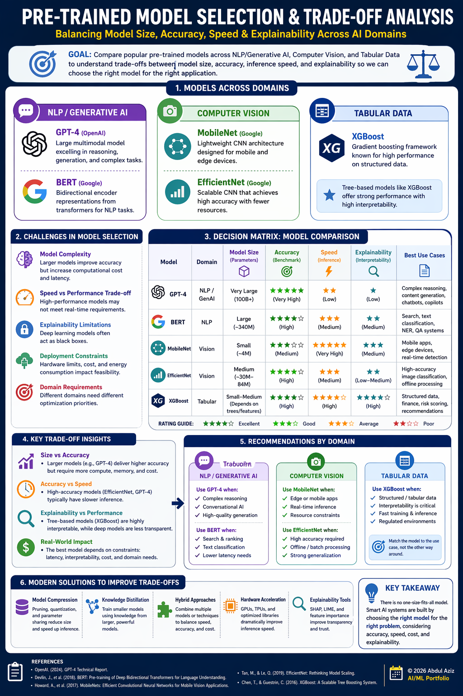

Workshop5
Pre-trained model selection and trade-off analysis infographic artifact.
Title
Pre-Trained Model Selection and Trade-Off Analysis
Model Size, Accuracy, Speed, and Explainability in Modern AI Systems

Description
The artifact is a clean, presentation-ready infographic that analyzes pre-trained models
across three major domains: Natural Language Processing (NLP)/Generative AI, computer
vision, and tabular data. It focuses on evaluating trade-offs between model size, accuracy,
inference speed, and explainability, which are critical factors for real-world deployment.
The infographic is structured into four key sections: model overview across domains,
trade-off analysis, decision matrix comparison, and practical recommendations. It highlights
widely used models such as GPT-4, BERT, MobileNet, EfficientNet, and XGBoost to show how
different architectures balance performance and efficiency.
Model Selection in AI Systems
Model selection is a critical step in AI development that involves choosing the most
appropriate model based on constraints such as computational resources, latency
requirements, and interpretability needs. While large-scale models like GPT-4 provide
state-of-the-art performance, they often come with high computational costs and limited
transparency.
In contrast, models such as MobileNet and XGBoost prioritize efficiency and
interpretability, making them suitable for edge deployments and structured data
applications. Understanding these trade-offs is essential for building scalable and
responsible AI systems.
Challenges in Model Selection
- Model Complexity: Larger models improve accuracy but increase computational cost and latency.
- Speed vs Performance Trade-Off: High-performance models may not meet real-time requirements.
- Explainability Limitations: Deep learning models often function as black boxes.
- Deployment Constraints: Hardware limitations, cost, and energy consumption impact feasibility.
- Domain-Specific Requirements: Different domains (NLP, vision, tabular) require different optimization priorities.
These challenges make model selection a multi-objective optimization problem rather than a
straightforward decision.
Decision Matrix and Performance Comparison
A decision matrix is used to compare models across key criteria:
- Model size (parameters, memory usage)
- Accuracy (benchmark performance)
- Speed (latency, throughput)
- Explainability (interpretability and transparency)
Decision Matrix Summary
| Model |
Domain |
Size |
Accuracy |
Speed |
Explainability |
| GPT-4 |
NLP/GenAI |
Very Large |
High |
Low |
Low |
| BERT |
NLP |
Large |
High |
Medium |
Medium |
| MobileNet |
Vision |
Small |
Medium |
High |
Medium |
| EfficientNet |
Vision |
Medium |
High |
Medium |
Low |
| XGBoost |
Tabular |
Small-Medium |
High |
High |
High |
This matrix highlights how no single model dominates across all dimensions, reinforcing the
importance of context-driven decision-making.
Trade-Off Insights
- Large Models (GPT-4): Highest accuracy and reasoning capability, but high cost, slower inference, and low explainability.
- Balanced Models (BERT, EfficientNet): Strong performance with moderate efficiency, suitable for production systems with reasonable compute.
- Lightweight Models (MobileNet): Optimized for speed and edge deployment, with lower accuracy but high efficiency.
- Tabular Models (XGBoost): High interpretability and strong performance, ideal for structured data and regulated environments.
Current Solutions and Optimization Techniques
- Model compression (quantization, pruning)
- Distillation (smaller models trained from larger ones)
- Hybrid architectures (combining multiple models)
- Hardware acceleration (GPUs, TPUs)
- Explainability tools (SHAP, feature importance for tabular models)
These approaches help balance performance, efficiency, and interpretability in production
systems.
Resource Components Included
- NLP/Generative AI models: GPT-4, BERT
- Computer vision models: MobileNet, EfficientNet
- Tabular models: XGBoost
- Evaluation criteria: model size, accuracy, speed, explainability
- Optimization techniques: model compression, distillation, hybrid systems
- Industry practices in model selection and deployment
Examples of Model Applications
- GPT-4 (OpenAI): Advanced conversational AI, copilots, and reasoning systems.
- BERT (Google): Search ranking, classification, and NLP pipelines.
- MobileNet (Google): Mobile vision applications and real-time detection.
- EfficientNet (Google): High-accuracy image classification tasks.
- XGBoost: Financial modeling, risk scoring, and tabular prediction systems.
Objective
To analyze and compare pre-trained models across domains while demonstrating how trade-offs
between size, accuracy, speed, and explainability influence real-world AI system design.
The goal is to provide a structured framework that supports informed and practical model
selection decisions.
Process / Methodology
- Researched widely used pre-trained models across NLP, vision, and tabular domains.
- Collected data on model size, performance benchmarks, and inference characteristics.
- Analyzed trade-offs between computational cost and model effectiveness.
- Developed a decision matrix to compare models across key criteria.
- Structured findings into a clear, visual infographic format.
- Focused on clarity, practical relevance, and real-world applicability.
Tools and Technologies Used
- AI-assisted research tools (ChatGPT)
- Microsoft PowerPoint / Figma / Canva for infographic design
- Python ecosystem knowledge (for model understanding)
- Industry research papers and documentation
- Visualization principles: hierarchy, contrast, structured layout
Value Proposition
This artifact translates complex AI model selection concepts into a structured and visually
engaging format. It demonstrates the ability to evaluate models beyond accuracy by
incorporating performance, efficiency, and explainability considerations.
Relevance to AI/ML Practice: Effective model selection is a critical skill
for AI engineers. This artifact showcases the ability to balance trade-offs and design
systems that are not only accurate but also scalable, efficient, and aligned with
real-world constraints.
References
- OpenAI documentation on GPT models
- Google AI research on BERT, MobileNet, and EfficientNet
- Chen, T., and Guestrin, C. (2016). XGBoost: A scalable tree boosting system
- Academic literature on model efficiency and deep learning trade-offs
- Industry resources on AI system design and optimization